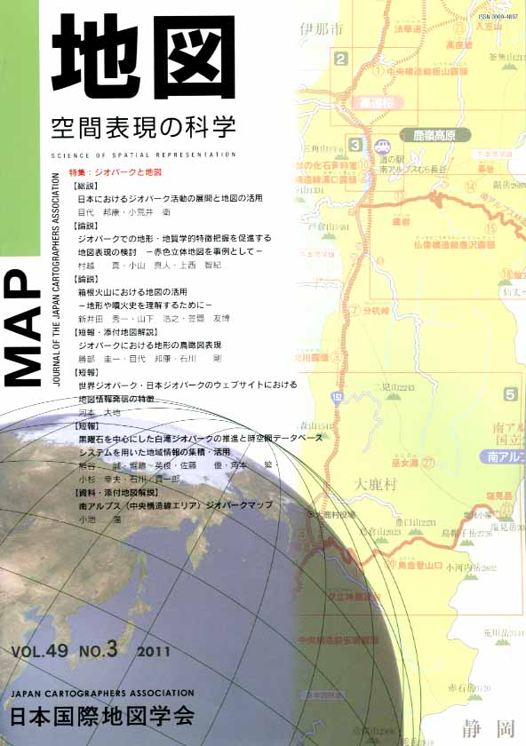
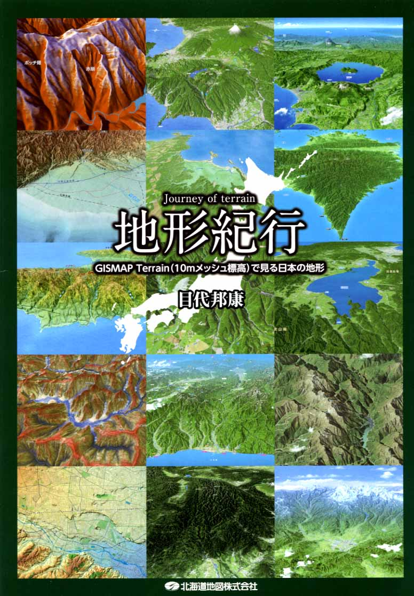
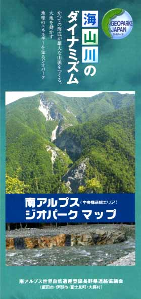
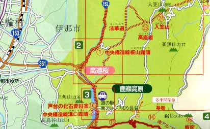

| 最 新 号 | バックナンバー | 添付地図目録 | 投 稿 規 程 |
Vol.49 No.３ （通巻１９５号） ２０１１年 《特集：ジオパークと地図》
| 【総説】 | 日本におけるジオパーク活動の展開と地図の活用 | 目代邦康・小荒井衛 |
| キーワード：ジオパーク、ジオツーリズム、観光地図、ジオパークの地図 | ||
| 【論説】 | ジオパークでの地形・地質学的特徴把握を促進する地図表現の検討−赤色立体地図を事例として− | 村越 真・小山真人・上西智紀 |
| キーワード：赤色立体地図、ジオパーク、火山地形、等高線、地図理解 | ||
| 箱根火山における地図の活用−地形や噴火史を理解するために− | 新井田秀一・山下浩之・笠間友博 | |
| キーワード：箱根火山、ジオパーク、衛星画像地図、DEM、地質図 | ||
| 【短報・添付地図解説】 | ジオパークにおける地形の鳥瞰図表現 | 勝部圭一・目代邦康・石川 剛 |
| キーワード：鳥瞰図、科学的観光地図、アンケート調査、地形紀行、地図調製 | ||
| 【短報】 | 世界ジオパーク・日本ジオパークのウェブサイトにおける地図情報発信の特徴 | 河本大地 |
| キーワード：ジオパーク、ジオツーリズム、地図、地理、インターネット | ||
| 黒曜石を中心にした白滝ジオパークの推進と時空間データベースシステムを用いた地域情報の集積・活用 | 熊谷 誠・堀嶋英俊・佐藤 優・角本 繁・小杉幸夫・石川貴一郎 | |
| キーワード：白滝ジオパーク、黒曜石、遠軽町埋蔵文化財センター、リモートセンシング、三次元地上計測システム、時空間データベースシステム、３次元地形解析 | ||
| 【資料・添付地図解説】 | 南アルプス（中央構造線エリア）ジオパークマップ | 小池 温 |
| キーワード：ジオパーク、位置情報、観光地図 | ||
| 【特別会員名簿】 | ||
| 【リレーメッセージ：地図・地図学への思い】 | ICA と私 | 金窪敏知 |
| 【学会記事】 | ||
| 【添付地図】
|
地形紀行 | |
| 南アルプス（中央構造線エリア）ジオパークマップ | ||
|
≪No.49 No.3 表紙≫ |
|
|  |
|
|
|
≪No.49 No.3 添付地図≫ |
|  
本図を許可なく複製・利用することを禁止します。
|